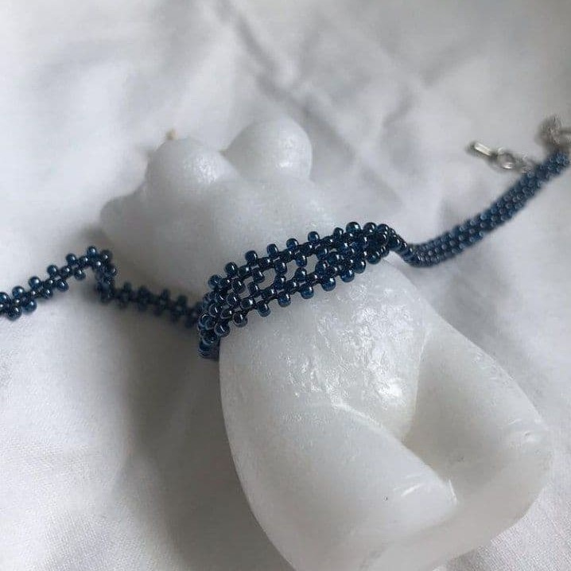

Вишуканість. Легкість. Елегантність або ж повітряність. Скільки всього можна виразити за допомогою прикрас. Ми обираємо їх залежно від емоцій, стану душі, і тим самим висвітлюємо, випромінюємо це нашому оточенню.
⠀
У прикрас із бісеру існує величезний спектр можливих варіантів виконання. Це дозволяє створювати індивідуальні прикраси під стиль кожного✨
⠀
Ця прикраса доступна в різних кольорах. Оберіть найкращий для себе
140 грн